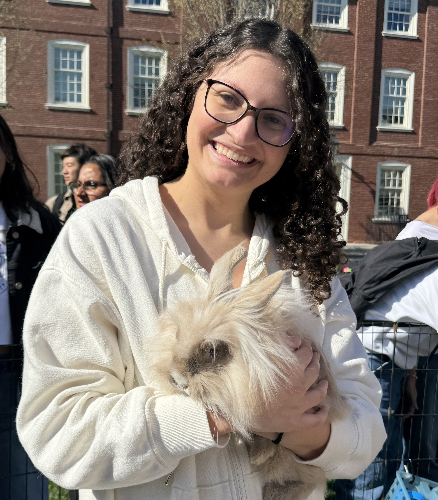
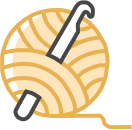
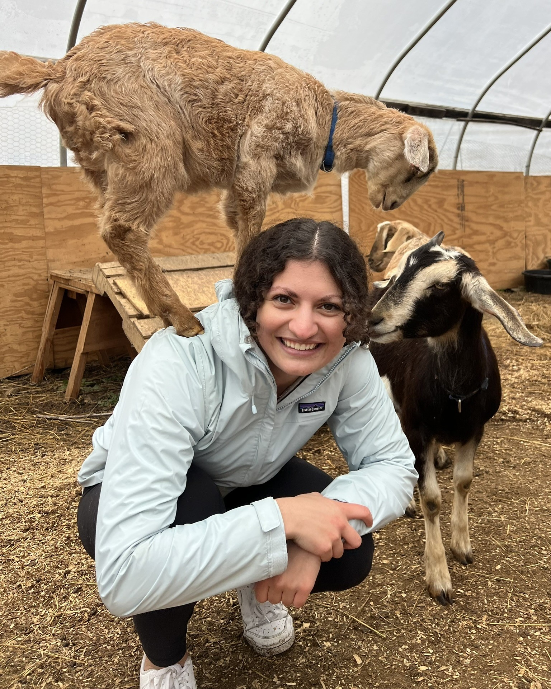

Hi, I'm Sana!
/seh · nuh/
Hello! I'm a sophomore at Brown University studying Computer Science , and am passionate about responsibly using technology to advance society while protecting others. I'm a fan of cats, fun facts, and bucket hats , and when I'm not working I enjoy learning types of dance (albeit badly) and going on adventures. This summer I'll be interning at Amazon as a Software Development Engineer in Boston.

I've been to over 20 countries
I love cats (and dogs!)

I crochet stuffed animals
Hollow Knight is my fav game
I love learning new types of dance

- I'm from Michigan, where I went to high school. There I participated in varisty tennis and swimming, and was captain of my swim team!
- At Brown, I've taken part in clubs such as Bachata, WiCS, Brown Outing Club, and Dabke
- Freshman year, I was a Backend Engineer for the Brown Daily Herald's mobile app
- I've been taking Arabic for two years now
- I was a Socially Responsible Computing TA for CSCI 0320: Software Engineering, where I taught topics such as accessibility, and software preservation